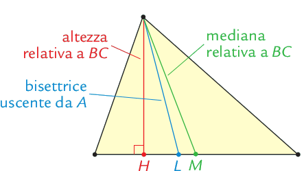
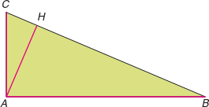
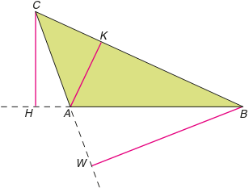

Triangoli
Definizione. Un triangolo è un insieme di punti del piano costituito da una poligonale chiusa di tre lati e dai suoi punti interni. □
Il triangolo è il più elementare tra i poligono. Un triangolo ha tre lati, tre vertici e tre angoli. I triangoli si classificano nel modo seguente:
Rispetto alla lunghezza dei lati
un triangolo si dice equilatero se ha i tre lati uguali;
un triangolo si dice scaleno se ha i tre lati disuguali;
un triangolo si dice isoscele se ha due lati uguali;
Rispetto all'ampiezza degli angoli
un triangolo si dice acutangolo se ha tutti e tre gli angoli acuti;
un triangolo si definisce ottusangolo se ha un angolo ottuso;
un triangolo si dice rettangolo se ha un angolo retto;
Segmenti notevoli
Altezza relativa a un lato: il segmento che partendo dal vertice opposto a quel lato incontra il lato stesso o il suo prolungamento formando due angoli retti.
Nel triangolo rettangolo due altezze coincidono con i cateti, mentre la terza, quella relativa all’ipotenusa, è interna al triangolo (AH).
Nel triangolo ottusangolo due altezze cadono all’esterno del triangolo; per costruirle, è necessario tracciare la retta passante per quel lato, prolungandolo opportunamente.
Bisettrice uscente da un vertice: il segmento costituito dai punti della bisettrice di quell’angolo che appartengono al triangolo.
Mediana relativa a un lato: il segmento che congiunge il vertice opposto a quel lato con il punto medio del lato stesso.